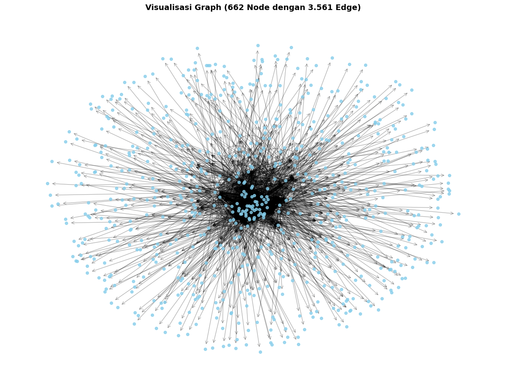
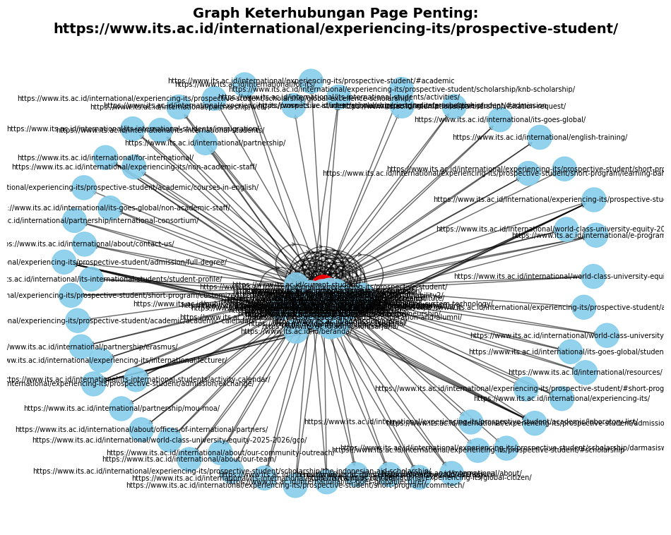

.jpg)
1. Import Library#
import pandas as pd
import numpy as np
import networkx as nx
import matplotlib.pyplot as plt
from IPython.display import display
2. Load Data#
dataset = '/content/drive/MyDrive/Tugas6PPW/PPWCrawlingLink (3).csv'
data_page = pd.read_csv(dataset)
---------------------------------------------------------------------------
FileNotFoundError Traceback (most recent call last)
Cell In[2], line 2
1 dataset = '/content/drive/MyDrive/Tugas6PPW/PPWCrawlingLink (3).csv'
----> 2 data_page = pd.read_csv(dataset)
File ~/.local/lib/python3.12/site-packages/pandas/io/parsers/readers.py:1026, in read_csv(filepath_or_buffer, sep, delimiter, header, names, index_col, usecols, dtype, engine, converters, true_values, false_values, skipinitialspace, skiprows, skipfooter, nrows, na_values, keep_default_na, na_filter, verbose, skip_blank_lines, parse_dates, infer_datetime_format, keep_date_col, date_parser, date_format, dayfirst, cache_dates, iterator, chunksize, compression, thousands, decimal, lineterminator, quotechar, quoting, doublequote, escapechar, comment, encoding, encoding_errors, dialect, on_bad_lines, delim_whitespace, low_memory, memory_map, float_precision, storage_options, dtype_backend)
1013 kwds_defaults = _refine_defaults_read(
1014 dialect,
1015 delimiter,
(...) 1022 dtype_backend=dtype_backend,
1023 )
1024 kwds.update(kwds_defaults)
-> 1026 return _read(filepath_or_buffer, kwds)
File ~/.local/lib/python3.12/site-packages/pandas/io/parsers/readers.py:620, in _read(filepath_or_buffer, kwds)
617 _validate_names(kwds.get("names", None))
619 # Create the parser.
--> 620 parser = TextFileReader(filepath_or_buffer, **kwds)
622 if chunksize or iterator:
623 return parser
File ~/.local/lib/python3.12/site-packages/pandas/io/parsers/readers.py:1620, in TextFileReader.__init__(self, f, engine, **kwds)
1617 self.options["has_index_names"] = kwds["has_index_names"]
1619 self.handles: IOHandles | None = None
-> 1620 self._engine = self._make_engine(f, self.engine)
File ~/.local/lib/python3.12/site-packages/pandas/io/parsers/readers.py:1880, in TextFileReader._make_engine(self, f, engine)
1878 if "b" not in mode:
1879 mode += "b"
-> 1880 self.handles = get_handle(
1881 f,
1882 mode,
1883 encoding=self.options.get("encoding", None),
1884 compression=self.options.get("compression", None),
1885 memory_map=self.options.get("memory_map", False),
1886 is_text=is_text,
1887 errors=self.options.get("encoding_errors", "strict"),
1888 storage_options=self.options.get("storage_options", None),
1889 )
1890 assert self.handles is not None
1891 f = self.handles.handle
File ~/.local/lib/python3.12/site-packages/pandas/io/common.py:873, in get_handle(path_or_buf, mode, encoding, compression, memory_map, is_text, errors, storage_options)
868 elif isinstance(handle, str):
869 # Check whether the filename is to be opened in binary mode.
870 # Binary mode does not support 'encoding' and 'newline'.
871 if ioargs.encoding and "b" not in ioargs.mode:
872 # Encoding
--> 873 handle = open(
874 handle,
875 ioargs.mode,
876 encoding=ioargs.encoding,
877 errors=errors,
878 newline="",
879 )
880 else:
881 # Binary mode
882 handle = open(handle, ioargs.mode)
FileNotFoundError: [Errno 2] No such file or directory: '/content/drive/MyDrive/Tugas6PPW/PPWCrawlingLink (3).csv'
display(data_page)
| id | page | link_keluar | |
|---|---|---|---|
| 0 | 1 | https://www.its.ac.id/ | https://www.its.ac.id/ |
| 1 | 2 | https://www.its.ac.id/ | https://www.its.ac.id/admission/ |
| 2 | 3 | https://www.its.ac.id/ | https://www.its.ac.id/current-student/ |
| 3 | 4 | https://www.its.ac.id/ | https://www.its.ac.id/fresher/ |
| 4 | 5 | https://www.its.ac.id/ | https://www.its.ac.id/lecturer-and-staff/ |
| ... | ... | ... | ... |
| 5483 | 5484 | https://www.its.ac.id/public-services/secretar... | https://www.its.ac.id/about-its/its-awards/ |
| 5484 | 5485 | https://www.its.ac.id/public-services/secretar... | https://www.its.ac.id/?page_id=11494 |
| 5485 | 5486 | https://www.its.ac.id/public-services/secretar... | https://www.its.ac.id/about-its/executive-board/ |
| 5486 | 5487 | https://www.its.ac.id/public-services/secretar... | https://www.its.ac.id/about-its/vision-and-mis... |
| 5487 | 5488 | https://www.its.ac.id/public-services/secretar... | https://www.its.ac.id/public-services/secretar... |
5488 rows × 3 columns
3. Membangun Graph Menggunakan NetworkX#
graph = nx.DiGraph()
edge = list(zip(data_page['page'], data_page['link_keluar']))
graph.add_edges_from(edge)
print(f"Jumlah node (page unik): {graph.number_of_nodes()}")
print(f"Jumlah edge (tautan): {graph.number_of_edges()}")
Jumlah node (page unik): 676
Jumlah edge (tautan): 3743
# Visualisasi Graph
plt.figure(figsize=(16, 12))
plt.title("Visualisasi Graph (662 Node dengan 3.561 Edge)", fontsize=14, fontweight='bold')
# layout efisien untuk dataset besar
pos = nx.spring_layout(graph, seed=42, k=0.15, iterations=20)
# gambar node dan edge
nx.draw_networkx_nodes(graph, pos, node_color='skyblue', node_size=25, alpha=0.8)
# nx.draw_networkx_edges(graph, pos, edge_color='black', arrows=False, alpha=0.3)
nx.draw_networkx_edges(graph, pos, edge_color='black', arrowstyle='->', arrowsize=12, alpha=0.3)
# label, bisa ditampilkan (resiko visualisasi ga jelas karena link panjang). aktifkan :
# nx.draw_networkx_labels(graph, pos, font_size=6, font_color='black')
plt.axis('off')
plt.show()

4. Membentuk Matriks Adjacency (A)#
# note: all matriks berukuran 662 x 662, sangat besar untuk ditampilkan
# jadi ditampilkan sebagian (misalnya 30x30)
page = list(graph.nodes())[:30]
A = nx.to_numpy_array(graph, nodelist=page, dtype=int)
data_page_A = pd.DataFrame(A, index=page, columns=page)
print("Matriks Adjacency (A) [30x30]:")
display(data_page_A)
Matriks Adjacency (A) [30x30]:
| https://www.its.ac.id/ | https://www.its.ac.id/admission/ | https://www.its.ac.id/current-student/ | https://www.its.ac.id/fresher/ | https://www.its.ac.id/lecturer-and-staff/ | https://www.its.ac.id/parents/ | https://www.its.ac.id/alumni/ | https://www.its.ac.id/id/beranda/ | https://www.its.ac.id/about-its/ | https://www.its.ac.id/about-its/facts-and-history/ | ... | https://www.its.ac.id/admission/pascasarjana/ | https://www.its.ac.id/admission/sarjana-terapan/ | https://www.its.ac.id/admission/profesi/ | https://www.its.ac.id/admission/iup/ | https://www.its.ac.id/international/experiencing-its/prospective-student/ | https://www.its.ac.id/study-at-its/#field | https://www.its.ac.id/campus-life/explore-its/ | https://www.its.ac.id/campus-life/theres-always-something-interesting/ | https://www.its.ac.id/study-at-its/study-program/ | https://www.its.ac.id/international/ | |
|---|---|---|---|---|---|---|---|---|---|---|---|---|---|---|---|---|---|---|---|---|---|
| https://www.its.ac.id/ | 1 | 1 | 1 | 1 | 1 | 1 | 1 | 1 | 1 | 1 | ... | 1 | 1 | 1 | 1 | 1 | 1 | 1 | 1 | 1 | 1 |
| https://www.its.ac.id/admission/ | 0 | 1 | 0 | 0 | 0 | 0 | 0 | 0 | 0 | 0 | ... | 1 | 0 | 1 | 1 | 1 | 0 | 0 | 0 | 0 | 0 |
| https://www.its.ac.id/current-student/ | 1 | 1 | 1 | 1 | 1 | 1 | 1 | 0 | 1 | 1 | ... | 1 | 1 | 1 | 1 | 1 | 1 | 1 | 1 | 1 | 1 |
| https://www.its.ac.id/fresher/ | 1 | 1 | 1 | 1 | 1 | 1 | 1 | 0 | 1 | 1 | ... | 1 | 1 | 1 | 1 | 1 | 1 | 1 | 1 | 1 | 1 |
| https://www.its.ac.id/lecturer-and-staff/ | 1 | 1 | 1 | 1 | 1 | 1 | 1 | 0 | 1 | 1 | ... | 1 | 1 | 1 | 1 | 1 | 1 | 1 | 1 | 1 | 1 |
| https://www.its.ac.id/parents/ | 1 | 1 | 1 | 1 | 1 | 1 | 1 | 0 | 1 | 1 | ... | 1 | 1 | 1 | 1 | 1 | 1 | 1 | 1 | 1 | 1 |
| https://www.its.ac.id/alumni/ | 1 | 0 | 0 | 0 | 0 | 0 | 1 | 0 | 0 | 0 | ... | 0 | 0 | 0 | 0 | 0 | 0 | 0 | 0 | 0 | 0 |
| https://www.its.ac.id/id/beranda/ | 1 | 1 | 0 | 0 | 0 | 0 | 1 | 1 | 0 | 0 | ... | 1 | 1 | 1 | 1 | 1 | 0 | 0 | 0 | 0 | 1 |
| https://www.its.ac.id/about-its/ | 1 | 1 | 1 | 1 | 1 | 1 | 1 | 0 | 1 | 1 | ... | 1 | 1 | 1 | 1 | 1 | 1 | 1 | 1 | 1 | 1 |
| https://www.its.ac.id/about-its/facts-and-history/ | 1 | 1 | 1 | 1 | 1 | 1 | 1 | 0 | 1 | 1 | ... | 1 | 1 | 1 | 1 | 1 | 1 | 1 | 1 | 1 | 1 |
| https://www.its.ac.id/about-its/ranking/ | 1 | 1 | 1 | 1 | 1 | 1 | 1 | 0 | 1 | 1 | ... | 1 | 1 | 1 | 1 | 1 | 1 | 1 | 1 | 1 | 1 |
| https://www.its.ac.id/about-its/executive-board/ | 1 | 1 | 1 | 1 | 1 | 1 | 1 | 0 | 1 | 1 | ... | 1 | 1 | 1 | 1 | 1 | 1 | 1 | 1 | 1 | 1 |
| https://www.its.ac.id/about-its/award-for-its/ | 1 | 1 | 1 | 1 | 1 | 1 | 1 | 0 | 1 | 1 | ... | 1 | 1 | 1 | 1 | 1 | 1 | 1 | 1 | 1 | 1 |
| https://www.its.ac.id/about-its/its-awards/ | 1 | 1 | 1 | 1 | 1 | 1 | 1 | 0 | 1 | 1 | ... | 1 | 1 | 1 | 1 | 1 | 1 | 1 | 1 | 1 | 1 |
| https://www.its.ac.id/about-its/vision-and-mission/ | 1 | 1 | 1 | 1 | 1 | 1 | 1 | 0 | 1 | 1 | ... | 1 | 1 | 1 | 1 | 1 | 1 | 1 | 1 | 1 | 1 |
| https://www.its.ac.id/about-its/organization-structure/ | 1 | 1 | 1 | 1 | 1 | 1 | 1 | 0 | 1 | 1 | ... | 1 | 1 | 1 | 1 | 1 | 1 | 1 | 1 | 1 | 1 |
| https://www.its.ac.id/about-its/offices-in-its/ | 1 | 1 | 1 | 1 | 1 | 1 | 1 | 0 | 1 | 1 | ... | 1 | 1 | 1 | 1 | 1 | 1 | 1 | 1 | 1 | 1 |
| https://www.its.ac.id/about-its/brand-guidelines/ | 1 | 1 | 1 | 1 | 1 | 1 | 1 | 0 | 1 | 1 | ... | 1 | 1 | 1 | 1 | 1 | 1 | 1 | 1 | 1 | 1 |
| https://www.its.ac.id/about-its/visit-its/ | 1 | 1 | 1 | 1 | 1 | 1 | 1 | 0 | 1 | 1 | ... | 1 | 1 | 1 | 1 | 1 | 1 | 1 | 1 | 1 | 1 |
| https://www.its.ac.id/admission/sarjana/ | 0 | 1 | 0 | 0 | 0 | 0 | 0 | 0 | 0 | 0 | ... | 1 | 0 | 1 | 0 | 1 | 0 | 0 | 0 | 0 | 0 |
| https://www.its.ac.id/admission/pascasarjana/ | 0 | 1 | 0 | 0 | 0 | 0 | 0 | 0 | 0 | 0 | ... | 1 | 0 | 1 | 0 | 1 | 0 | 0 | 0 | 0 | 0 |
| https://www.its.ac.id/admission/sarjana-terapan/ | 0 | 0 | 0 | 0 | 0 | 0 | 0 | 0 | 0 | 0 | ... | 0 | 0 | 0 | 0 | 0 | 0 | 0 | 0 | 0 | 0 |
| https://www.its.ac.id/admission/profesi/ | 0 | 1 | 0 | 0 | 0 | 0 | 0 | 0 | 0 | 0 | ... | 1 | 0 | 1 | 0 | 1 | 0 | 0 | 0 | 0 | 0 |
| https://www.its.ac.id/admission/iup/ | 0 | 1 | 0 | 0 | 0 | 0 | 0 | 0 | 0 | 0 | ... | 0 | 0 | 0 | 1 | 1 | 0 | 0 | 0 | 0 | 0 |
| https://www.its.ac.id/international/experiencing-its/prospective-student/ | 0 | 0 | 0 | 0 | 0 | 0 | 0 | 0 | 0 | 0 | ... | 0 | 0 | 0 | 0 | 1 | 0 | 0 | 0 | 0 | 1 |
| https://www.its.ac.id/study-at-its/#field | 1 | 1 | 1 | 1 | 1 | 1 | 1 | 0 | 1 | 1 | ... | 1 | 1 | 1 | 1 | 1 | 1 | 1 | 1 | 1 | 1 |
| https://www.its.ac.id/campus-life/explore-its/ | 1 | 1 | 1 | 1 | 1 | 1 | 1 | 0 | 1 | 1 | ... | 1 | 1 | 1 | 1 | 1 | 1 | 1 | 1 | 1 | 1 |
| https://www.its.ac.id/campus-life/theres-always-something-interesting/ | 1 | 1 | 1 | 1 | 1 | 1 | 1 | 0 | 1 | 1 | ... | 1 | 1 | 1 | 1 | 1 | 1 | 1 | 1 | 1 | 1 |
| https://www.its.ac.id/study-at-its/study-program/ | 1 | 1 | 1 | 1 | 1 | 1 | 1 | 0 | 1 | 1 | ... | 1 | 1 | 1 | 1 | 1 | 1 | 1 | 1 | 1 | 1 |
| https://www.its.ac.id/international/ | 0 | 0 | 0 | 0 | 0 | 0 | 0 | 0 | 0 | 0 | ... | 0 | 0 | 0 | 0 | 1 | 0 | 0 | 0 | 0 | 1 |
30 rows × 30 columns
5. Membentuk Matriks Probabilitas Transisi Baris-Stokastik (P)#
adj_full = nx.to_numpy_array(graph, dtype=float)
n = adj_full.shape[0]
# tangani dangling node (page tanpa link_keluar)
out_degree = adj_full.sum(axis=1)
for i in range(n):
if out_degree[i] == 0:
adj_full[i, :] = 1.0
# matriks transisi baris-stokastik
P = adj_full / adj_full.sum(axis=1, keepdims=True)
# tampilan sebagian matriks P
data_page_P = pd.DataFrame(P[:30, :30], columns=range(30), index=range(30))
print("Matriks Transisi (P) [30x30]:")
display(data_page_P)
Matriks Transisi (P) [30x30]:
| 0 | 1 | 2 | 3 | 4 | 5 | 6 | 7 | 8 | 9 | ... | 20 | 21 | 22 | 23 | 24 | 25 | 26 | 27 | 28 | 29 | |
|---|---|---|---|---|---|---|---|---|---|---|---|---|---|---|---|---|---|---|---|---|---|
| 0 | 0.010638 | 0.010638 | 0.010638 | 0.010638 | 0.010638 | 0.010638 | 0.010638 | 0.010638 | 0.010638 | 0.010638 | ... | 0.010638 | 0.010638 | 0.010638 | 0.010638 | 0.010638 | 0.010638 | 0.010638 | 0.010638 | 0.010638 | 0.010638 |
| 1 | 0.000000 | 0.032258 | 0.000000 | 0.000000 | 0.000000 | 0.000000 | 0.000000 | 0.000000 | 0.000000 | 0.000000 | ... | 0.032258 | 0.000000 | 0.032258 | 0.032258 | 0.032258 | 0.000000 | 0.000000 | 0.000000 | 0.000000 | 0.000000 |
| 2 | 0.010753 | 0.010753 | 0.010753 | 0.010753 | 0.010753 | 0.010753 | 0.010753 | 0.000000 | 0.010753 | 0.010753 | ... | 0.010753 | 0.010753 | 0.010753 | 0.010753 | 0.010753 | 0.010753 | 0.010753 | 0.010753 | 0.010753 | 0.010753 |
| 3 | 0.014085 | 0.014085 | 0.014085 | 0.014085 | 0.014085 | 0.014085 | 0.014085 | 0.000000 | 0.014085 | 0.014085 | ... | 0.014085 | 0.014085 | 0.014085 | 0.014085 | 0.014085 | 0.014085 | 0.014085 | 0.014085 | 0.014085 | 0.014085 |
| 4 | 0.009804 | 0.009804 | 0.009804 | 0.009804 | 0.009804 | 0.009804 | 0.009804 | 0.000000 | 0.009804 | 0.009804 | ... | 0.009804 | 0.009804 | 0.009804 | 0.009804 | 0.009804 | 0.009804 | 0.009804 | 0.009804 | 0.009804 | 0.009804 |
| 5 | 0.012821 | 0.012821 | 0.012821 | 0.012821 | 0.012821 | 0.012821 | 0.012821 | 0.000000 | 0.012821 | 0.012821 | ... | 0.012821 | 0.012821 | 0.012821 | 0.012821 | 0.012821 | 0.012821 | 0.012821 | 0.012821 | 0.012821 | 0.012821 |
| 6 | 0.083333 | 0.000000 | 0.000000 | 0.000000 | 0.000000 | 0.000000 | 0.083333 | 0.000000 | 0.000000 | 0.000000 | ... | 0.000000 | 0.000000 | 0.000000 | 0.000000 | 0.000000 | 0.000000 | 0.000000 | 0.000000 | 0.000000 | 0.000000 |
| 7 | 0.010526 | 0.010526 | 0.000000 | 0.000000 | 0.000000 | 0.000000 | 0.010526 | 0.010526 | 0.000000 | 0.000000 | ... | 0.010526 | 0.010526 | 0.010526 | 0.010526 | 0.010526 | 0.000000 | 0.000000 | 0.000000 | 0.000000 | 0.010526 |
| 8 | 0.010638 | 0.010638 | 0.010638 | 0.010638 | 0.010638 | 0.010638 | 0.010638 | 0.000000 | 0.010638 | 0.010638 | ... | 0.010638 | 0.010638 | 0.010638 | 0.010638 | 0.010638 | 0.010638 | 0.010638 | 0.010638 | 0.010638 | 0.010638 |
| 9 | 0.012658 | 0.012658 | 0.012658 | 0.012658 | 0.012658 | 0.012658 | 0.012658 | 0.000000 | 0.012658 | 0.012658 | ... | 0.012658 | 0.012658 | 0.012658 | 0.012658 | 0.012658 | 0.012658 | 0.012658 | 0.012658 | 0.012658 | 0.012658 |
| 10 | 0.012658 | 0.012658 | 0.012658 | 0.012658 | 0.012658 | 0.012658 | 0.012658 | 0.000000 | 0.012658 | 0.012658 | ... | 0.012658 | 0.012658 | 0.012658 | 0.012658 | 0.012658 | 0.012658 | 0.012658 | 0.012658 | 0.012658 | 0.012658 |
| 11 | 0.012658 | 0.012658 | 0.012658 | 0.012658 | 0.012658 | 0.012658 | 0.012658 | 0.000000 | 0.012658 | 0.012658 | ... | 0.012658 | 0.012658 | 0.012658 | 0.012658 | 0.012658 | 0.012658 | 0.012658 | 0.012658 | 0.012658 | 0.012658 |
| 12 | 0.010526 | 0.010526 | 0.010526 | 0.010526 | 0.010526 | 0.010526 | 0.010526 | 0.000000 | 0.010526 | 0.010526 | ... | 0.010526 | 0.010526 | 0.010526 | 0.010526 | 0.010526 | 0.010526 | 0.010526 | 0.010526 | 0.010526 | 0.010526 |
| 13 | 0.011111 | 0.011111 | 0.011111 | 0.011111 | 0.011111 | 0.011111 | 0.011111 | 0.000000 | 0.011111 | 0.011111 | ... | 0.011111 | 0.011111 | 0.011111 | 0.011111 | 0.011111 | 0.011111 | 0.011111 | 0.011111 | 0.011111 | 0.011111 |
| 14 | 0.012821 | 0.012821 | 0.012821 | 0.012821 | 0.012821 | 0.012821 | 0.012821 | 0.000000 | 0.012821 | 0.012821 | ... | 0.012821 | 0.012821 | 0.012821 | 0.012821 | 0.012821 | 0.012821 | 0.012821 | 0.012821 | 0.012821 | 0.012821 |
| 15 | 0.011905 | 0.011905 | 0.011905 | 0.011905 | 0.011905 | 0.011905 | 0.011905 | 0.000000 | 0.011905 | 0.011905 | ... | 0.011905 | 0.011905 | 0.011905 | 0.011905 | 0.011905 | 0.011905 | 0.011905 | 0.011905 | 0.011905 | 0.011905 |
| 16 | 0.007463 | 0.007463 | 0.007463 | 0.007463 | 0.007463 | 0.007463 | 0.007463 | 0.000000 | 0.007463 | 0.007463 | ... | 0.007463 | 0.007463 | 0.007463 | 0.007463 | 0.007463 | 0.007463 | 0.007463 | 0.007463 | 0.007463 | 0.007463 |
| 17 | 0.012821 | 0.012821 | 0.012821 | 0.012821 | 0.012821 | 0.012821 | 0.012821 | 0.000000 | 0.012821 | 0.012821 | ... | 0.012821 | 0.012821 | 0.012821 | 0.012821 | 0.012821 | 0.012821 | 0.012821 | 0.012821 | 0.012821 | 0.012821 |
| 18 | 0.012658 | 0.012658 | 0.012658 | 0.012658 | 0.012658 | 0.012658 | 0.012658 | 0.000000 | 0.012658 | 0.012658 | ... | 0.012658 | 0.012658 | 0.012658 | 0.012658 | 0.012658 | 0.012658 | 0.012658 | 0.012658 | 0.012658 | 0.012658 |
| 19 | 0.000000 | 0.020833 | 0.000000 | 0.000000 | 0.000000 | 0.000000 | 0.000000 | 0.000000 | 0.000000 | 0.000000 | ... | 0.020833 | 0.000000 | 0.020833 | 0.000000 | 0.020833 | 0.000000 | 0.000000 | 0.000000 | 0.000000 | 0.000000 |
| 20 | 0.000000 | 0.037037 | 0.000000 | 0.000000 | 0.000000 | 0.000000 | 0.000000 | 0.000000 | 0.000000 | 0.000000 | ... | 0.037037 | 0.000000 | 0.037037 | 0.000000 | 0.037037 | 0.000000 | 0.000000 | 0.000000 | 0.000000 | 0.000000 |
| 21 | 0.001479 | 0.001479 | 0.001479 | 0.001479 | 0.001479 | 0.001479 | 0.001479 | 0.001479 | 0.001479 | 0.001479 | ... | 0.001479 | 0.001479 | 0.001479 | 0.001479 | 0.001479 | 0.001479 | 0.001479 | 0.001479 | 0.001479 | 0.001479 |
| 22 | 0.000000 | 0.037037 | 0.000000 | 0.000000 | 0.000000 | 0.000000 | 0.000000 | 0.000000 | 0.000000 | 0.000000 | ... | 0.037037 | 0.000000 | 0.037037 | 0.000000 | 0.037037 | 0.000000 | 0.000000 | 0.000000 | 0.000000 | 0.000000 |
| 23 | 0.000000 | 0.043478 | 0.000000 | 0.000000 | 0.000000 | 0.000000 | 0.000000 | 0.000000 | 0.000000 | 0.000000 | ... | 0.000000 | 0.000000 | 0.000000 | 0.043478 | 0.043478 | 0.000000 | 0.000000 | 0.000000 | 0.000000 | 0.000000 |
| 24 | 0.000000 | 0.000000 | 0.000000 | 0.000000 | 0.000000 | 0.000000 | 0.000000 | 0.000000 | 0.000000 | 0.000000 | ... | 0.000000 | 0.000000 | 0.000000 | 0.000000 | 0.016949 | 0.000000 | 0.000000 | 0.000000 | 0.000000 | 0.016949 |
| 25 | 0.011628 | 0.011628 | 0.011628 | 0.011628 | 0.011628 | 0.011628 | 0.011628 | 0.000000 | 0.011628 | 0.011628 | ... | 0.011628 | 0.011628 | 0.011628 | 0.011628 | 0.011628 | 0.011628 | 0.011628 | 0.011628 | 0.011628 | 0.011628 |
| 26 | 0.010000 | 0.010000 | 0.010000 | 0.010000 | 0.010000 | 0.010000 | 0.010000 | 0.000000 | 0.010000 | 0.010000 | ... | 0.010000 | 0.010000 | 0.010000 | 0.010000 | 0.010000 | 0.010000 | 0.010000 | 0.010000 | 0.010000 | 0.010000 |
| 27 | 0.010000 | 0.010000 | 0.010000 | 0.010000 | 0.010000 | 0.010000 | 0.010000 | 0.000000 | 0.010000 | 0.010000 | ... | 0.010000 | 0.010000 | 0.010000 | 0.010000 | 0.010000 | 0.010000 | 0.010000 | 0.010000 | 0.010000 | 0.010000 |
| 28 | 0.007692 | 0.007692 | 0.007692 | 0.007692 | 0.007692 | 0.007692 | 0.007692 | 0.000000 | 0.007692 | 0.007692 | ... | 0.007692 | 0.007692 | 0.007692 | 0.007692 | 0.007692 | 0.007692 | 0.007692 | 0.007692 | 0.007692 | 0.007692 |
| 29 | 0.000000 | 0.000000 | 0.000000 | 0.000000 | 0.000000 | 0.000000 | 0.000000 | 0.000000 | 0.000000 | 0.000000 | ... | 0.000000 | 0.000000 | 0.000000 | 0.000000 | 0.020000 | 0.000000 | 0.000000 | 0.000000 | 0.000000 | 0.020000 |
30 rows × 30 columns
6. Membentuk Matriks Kolom-Stokastik (M)#
# M = Pᵀ (kolom-stokastik)
M = P.T
data_page_M = pd.DataFrame(M[:30, :30], columns=range(30), index=range(30))
print("Matriks M = Pᵀ [30x30]:")
display(data_page_M)
Matriks M = Pᵀ [30x30]:
| 0 | 1 | 2 | 3 | 4 | 5 | 6 | 7 | 8 | 9 | ... | 20 | 21 | 22 | 23 | 24 | 25 | 26 | 27 | 28 | 29 | |
|---|---|---|---|---|---|---|---|---|---|---|---|---|---|---|---|---|---|---|---|---|---|
| 0 | 0.010638 | 0.000000 | 0.010753 | 0.014085 | 0.009804 | 0.012821 | 0.083333 | 0.010526 | 0.010638 | 0.012658 | ... | 0.000000 | 0.001479 | 0.000000 | 0.000000 | 0.000000 | 0.011628 | 0.01 | 0.01 | 0.007692 | 0.00 |
| 1 | 0.010638 | 0.032258 | 0.010753 | 0.014085 | 0.009804 | 0.012821 | 0.000000 | 0.010526 | 0.010638 | 0.012658 | ... | 0.037037 | 0.001479 | 0.037037 | 0.043478 | 0.000000 | 0.011628 | 0.01 | 0.01 | 0.007692 | 0.00 |
| 2 | 0.010638 | 0.000000 | 0.010753 | 0.014085 | 0.009804 | 0.012821 | 0.000000 | 0.000000 | 0.010638 | 0.012658 | ... | 0.000000 | 0.001479 | 0.000000 | 0.000000 | 0.000000 | 0.011628 | 0.01 | 0.01 | 0.007692 | 0.00 |
| 3 | 0.010638 | 0.000000 | 0.010753 | 0.014085 | 0.009804 | 0.012821 | 0.000000 | 0.000000 | 0.010638 | 0.012658 | ... | 0.000000 | 0.001479 | 0.000000 | 0.000000 | 0.000000 | 0.011628 | 0.01 | 0.01 | 0.007692 | 0.00 |
| 4 | 0.010638 | 0.000000 | 0.010753 | 0.014085 | 0.009804 | 0.012821 | 0.000000 | 0.000000 | 0.010638 | 0.012658 | ... | 0.000000 | 0.001479 | 0.000000 | 0.000000 | 0.000000 | 0.011628 | 0.01 | 0.01 | 0.007692 | 0.00 |
| 5 | 0.010638 | 0.000000 | 0.010753 | 0.014085 | 0.009804 | 0.012821 | 0.000000 | 0.000000 | 0.010638 | 0.012658 | ... | 0.000000 | 0.001479 | 0.000000 | 0.000000 | 0.000000 | 0.011628 | 0.01 | 0.01 | 0.007692 | 0.00 |
| 6 | 0.010638 | 0.000000 | 0.010753 | 0.014085 | 0.009804 | 0.012821 | 0.083333 | 0.010526 | 0.010638 | 0.012658 | ... | 0.000000 | 0.001479 | 0.000000 | 0.000000 | 0.000000 | 0.011628 | 0.01 | 0.01 | 0.007692 | 0.00 |
| 7 | 0.010638 | 0.000000 | 0.000000 | 0.000000 | 0.000000 | 0.000000 | 0.000000 | 0.010526 | 0.000000 | 0.000000 | ... | 0.000000 | 0.001479 | 0.000000 | 0.000000 | 0.000000 | 0.000000 | 0.00 | 0.00 | 0.000000 | 0.00 |
| 8 | 0.010638 | 0.000000 | 0.010753 | 0.014085 | 0.009804 | 0.012821 | 0.000000 | 0.000000 | 0.010638 | 0.012658 | ... | 0.000000 | 0.001479 | 0.000000 | 0.000000 | 0.000000 | 0.011628 | 0.01 | 0.01 | 0.007692 | 0.00 |
| 9 | 0.010638 | 0.000000 | 0.010753 | 0.014085 | 0.009804 | 0.012821 | 0.000000 | 0.000000 | 0.010638 | 0.012658 | ... | 0.000000 | 0.001479 | 0.000000 | 0.000000 | 0.000000 | 0.011628 | 0.01 | 0.01 | 0.007692 | 0.00 |
| 10 | 0.010638 | 0.000000 | 0.010753 | 0.014085 | 0.009804 | 0.012821 | 0.000000 | 0.000000 | 0.010638 | 0.012658 | ... | 0.000000 | 0.001479 | 0.000000 | 0.000000 | 0.000000 | 0.011628 | 0.01 | 0.01 | 0.007692 | 0.00 |
| 11 | 0.010638 | 0.000000 | 0.010753 | 0.014085 | 0.009804 | 0.012821 | 0.000000 | 0.000000 | 0.010638 | 0.012658 | ... | 0.000000 | 0.001479 | 0.000000 | 0.000000 | 0.000000 | 0.011628 | 0.01 | 0.01 | 0.007692 | 0.00 |
| 12 | 0.010638 | 0.000000 | 0.010753 | 0.014085 | 0.009804 | 0.012821 | 0.000000 | 0.000000 | 0.010638 | 0.012658 | ... | 0.000000 | 0.001479 | 0.000000 | 0.000000 | 0.000000 | 0.011628 | 0.01 | 0.01 | 0.007692 | 0.00 |
| 13 | 0.010638 | 0.000000 | 0.010753 | 0.014085 | 0.009804 | 0.012821 | 0.000000 | 0.000000 | 0.010638 | 0.012658 | ... | 0.000000 | 0.001479 | 0.000000 | 0.000000 | 0.000000 | 0.011628 | 0.01 | 0.01 | 0.007692 | 0.00 |
| 14 | 0.010638 | 0.000000 | 0.010753 | 0.014085 | 0.009804 | 0.012821 | 0.000000 | 0.000000 | 0.010638 | 0.012658 | ... | 0.000000 | 0.001479 | 0.000000 | 0.000000 | 0.000000 | 0.011628 | 0.01 | 0.01 | 0.007692 | 0.00 |
| 15 | 0.010638 | 0.000000 | 0.010753 | 0.014085 | 0.009804 | 0.012821 | 0.000000 | 0.000000 | 0.010638 | 0.012658 | ... | 0.000000 | 0.001479 | 0.000000 | 0.000000 | 0.000000 | 0.011628 | 0.01 | 0.01 | 0.007692 | 0.00 |
| 16 | 0.010638 | 0.000000 | 0.010753 | 0.014085 | 0.009804 | 0.012821 | 0.000000 | 0.000000 | 0.010638 | 0.012658 | ... | 0.000000 | 0.001479 | 0.000000 | 0.000000 | 0.000000 | 0.011628 | 0.01 | 0.01 | 0.007692 | 0.00 |
| 17 | 0.010638 | 0.000000 | 0.010753 | 0.014085 | 0.009804 | 0.012821 | 0.000000 | 0.000000 | 0.010638 | 0.012658 | ... | 0.000000 | 0.001479 | 0.000000 | 0.000000 | 0.000000 | 0.011628 | 0.01 | 0.01 | 0.007692 | 0.00 |
| 18 | 0.010638 | 0.000000 | 0.010753 | 0.014085 | 0.009804 | 0.012821 | 0.000000 | 0.000000 | 0.010638 | 0.012658 | ... | 0.000000 | 0.001479 | 0.000000 | 0.000000 | 0.000000 | 0.011628 | 0.01 | 0.01 | 0.007692 | 0.00 |
| 19 | 0.010638 | 0.032258 | 0.010753 | 0.014085 | 0.009804 | 0.012821 | 0.000000 | 0.010526 | 0.010638 | 0.012658 | ... | 0.037037 | 0.001479 | 0.037037 | 0.043478 | 0.000000 | 0.011628 | 0.01 | 0.01 | 0.007692 | 0.00 |
| 20 | 0.010638 | 0.032258 | 0.010753 | 0.014085 | 0.009804 | 0.012821 | 0.000000 | 0.010526 | 0.010638 | 0.012658 | ... | 0.037037 | 0.001479 | 0.037037 | 0.000000 | 0.000000 | 0.011628 | 0.01 | 0.01 | 0.007692 | 0.00 |
| 21 | 0.010638 | 0.000000 | 0.010753 | 0.014085 | 0.009804 | 0.012821 | 0.000000 | 0.010526 | 0.010638 | 0.012658 | ... | 0.000000 | 0.001479 | 0.000000 | 0.000000 | 0.000000 | 0.011628 | 0.01 | 0.01 | 0.007692 | 0.00 |
| 22 | 0.010638 | 0.032258 | 0.010753 | 0.014085 | 0.009804 | 0.012821 | 0.000000 | 0.010526 | 0.010638 | 0.012658 | ... | 0.037037 | 0.001479 | 0.037037 | 0.000000 | 0.000000 | 0.011628 | 0.01 | 0.01 | 0.007692 | 0.00 |
| 23 | 0.010638 | 0.032258 | 0.010753 | 0.014085 | 0.009804 | 0.012821 | 0.000000 | 0.010526 | 0.010638 | 0.012658 | ... | 0.000000 | 0.001479 | 0.000000 | 0.043478 | 0.000000 | 0.011628 | 0.01 | 0.01 | 0.007692 | 0.00 |
| 24 | 0.010638 | 0.032258 | 0.010753 | 0.014085 | 0.009804 | 0.012821 | 0.000000 | 0.010526 | 0.010638 | 0.012658 | ... | 0.037037 | 0.001479 | 0.037037 | 0.043478 | 0.016949 | 0.011628 | 0.01 | 0.01 | 0.007692 | 0.02 |
| 25 | 0.010638 | 0.000000 | 0.010753 | 0.014085 | 0.009804 | 0.012821 | 0.000000 | 0.000000 | 0.010638 | 0.012658 | ... | 0.000000 | 0.001479 | 0.000000 | 0.000000 | 0.000000 | 0.011628 | 0.01 | 0.01 | 0.007692 | 0.00 |
| 26 | 0.010638 | 0.000000 | 0.010753 | 0.014085 | 0.009804 | 0.012821 | 0.000000 | 0.000000 | 0.010638 | 0.012658 | ... | 0.000000 | 0.001479 | 0.000000 | 0.000000 | 0.000000 | 0.011628 | 0.01 | 0.01 | 0.007692 | 0.00 |
| 27 | 0.010638 | 0.000000 | 0.010753 | 0.014085 | 0.009804 | 0.012821 | 0.000000 | 0.000000 | 0.010638 | 0.012658 | ... | 0.000000 | 0.001479 | 0.000000 | 0.000000 | 0.000000 | 0.011628 | 0.01 | 0.01 | 0.007692 | 0.00 |
| 28 | 0.010638 | 0.000000 | 0.010753 | 0.014085 | 0.009804 | 0.012821 | 0.000000 | 0.000000 | 0.010638 | 0.012658 | ... | 0.000000 | 0.001479 | 0.000000 | 0.000000 | 0.000000 | 0.011628 | 0.01 | 0.01 | 0.007692 | 0.00 |
| 29 | 0.010638 | 0.000000 | 0.010753 | 0.014085 | 0.009804 | 0.012821 | 0.000000 | 0.010526 | 0.010638 | 0.012658 | ... | 0.000000 | 0.001479 | 0.000000 | 0.000000 | 0.016949 | 0.011628 | 0.01 | 0.01 | 0.007692 | 0.02 |
30 rows × 30 columns
7. Menghitung PageRank Iteratif (Manual)#
def pagerank_iteratif(M, pagelist, d=0.85, max_iter=100, tol=1e-6):
n = M.shape[0]
r = np.ones(n) / n
teleport = (1 - d) / n
for i in range(max_iter):
r_new = d * M @ r + teleport
# debugging aja
indeks_top_page = np.argmax(r_new) # indeks page dengan PageRank tertinggi
top_page = pagelist[indeks_top_page] # page dengan score pagerank tertinggi
print(f"Iterasi {i+1}: Page {top_page} dengan PageRank {r_new[indeks_top_page]:.6f}")
if np.linalg.norm(r_new - r, 1) < tol:
# debugging aja
print(f"Konvergen setelah {i+1} iterasi")
break
r = r_new
return r
print("Menghitung PageRank:")
urutan_page = list(graph.nodes())
r = pagerank_iteratif(M, pagelist=urutan_page, d=0.85, max_iter=100, tol=1e-6)
Menghitung PageRank:
Iterasi 1: Page https://www.its.ac.id/international/experiencing-its/prospective-student/ dengan PageRank 0.002246
Iterasi 2: Page https://www.its.ac.id/international/experiencing-its/prospective-student/ dengan PageRank 0.002527
Iterasi 3: Page https://www.its.ac.id/international/experiencing-its/prospective-student/ dengan PageRank 0.002623
Iterasi 4: Page https://www.its.ac.id/international/experiencing-its/prospective-student/ dengan PageRank 0.002655
Iterasi 5: Page https://www.its.ac.id/international/experiencing-its/prospective-student/ dengan PageRank 0.002666
Iterasi 6: Page https://www.its.ac.id/international/experiencing-its/prospective-student/ dengan PageRank 0.002670
Iterasi 7: Page https://www.its.ac.id/international/experiencing-its/prospective-student/ dengan PageRank 0.002671
Iterasi 8: Page https://www.its.ac.id/international/experiencing-its/prospective-student/ dengan PageRank 0.002671
Iterasi 9: Page https://www.its.ac.id/international/experiencing-its/prospective-student/ dengan PageRank 0.002671
Iterasi 10: Page https://www.its.ac.id/international/experiencing-its/prospective-student/ dengan PageRank 0.002671
Iterasi 11: Page https://www.its.ac.id/international/experiencing-its/prospective-student/ dengan PageRank 0.002671
Iterasi 12: Page https://www.its.ac.id/international/experiencing-its/prospective-student/ dengan PageRank 0.002671
Konvergen setelah 12 iterasi
8. Menampilkan dan Menyimpan Hasil PageRank#
1. Semua Page#
score_pagerank = pd.DataFrame({
'page': list(graph.nodes()),
'pagerank': r
})
# mengurutkan nilai PageRank tertinggi ke terendah
data_pagerank_page = score_pagerank.sort_values(by='pagerank', ascending=False).reset_index(drop=True)
print("Data Page dan Score PageRank:")
display(data_pagerank_page)
Data Page dan Score PageRank:
| page | pagerank | |
|---|---|---|
| 0 | https://www.its.ac.id/international/experienci... | 0.002671 |
| 1 | https://www.its.ac.id/admission/sarjana/ | 0.002594 |
| 2 | https://www.its.ac.id/admission/ | 0.002594 |
| 3 | https://www.its.ac.id/admission/pascasarjana/ | 0.002505 |
| 4 | https://www.its.ac.id/admission/profesi/ | 0.002505 |
| ... | ... | ... |
| 671 | https://www.its.ac.id/id/layanan/penjaminan-mutu/ | 0.001353 |
| 672 | https://www.its.ac.id/id/layanan/audit-internal/ | 0.001353 |
| 673 | https://www.its.ac.id/id/kuliah-di-its/fakulta... | 0.001353 |
| 674 | https://www.its.ac.id/kuliah-di-its/#bidang | 0.001353 |
| 675 | https://www.its.ac.id/id/inisiatif/ | 0.001353 |
676 rows × 2 columns
data_pagerank_page.to_csv("PPW_Tugas6_LinkDalamPage_PageRank(Manual).csv", index=False)
2. 5 Page#
lima_page_penting = data_pagerank_page.head(5)
print("5 Page dengan Nilai PageRank Tertinggi:")
display(lima_page_penting)
5 Page dengan Nilai PageRank Tertinggi:
| page | pagerank | |
|---|---|---|
| 0 | https://www.its.ac.id/international/experienci... | 0.002671 |
| 1 | https://www.its.ac.id/admission/sarjana/ | 0.002594 |
| 2 | https://www.its.ac.id/admission/ | 0.002594 |
| 3 | https://www.its.ac.id/admission/pascasarjana/ | 0.002505 |
| 4 | https://www.its.ac.id/admission/profesi/ | 0.002505 |
9. Perbandingan: Menghitung dan Menampilkan Hasil PageRank Menggunakan NetworkX#
1. Semua Page#
score_pagerank_networkx = nx.pagerank(graph, alpha=0.85)
data_pagerank_page_networkx = pd.DataFrame(list(score_pagerank_networkx.items()), columns=['page', 'pagerank'])
# page score pagerank tertinggi ke terendah
data_page_pagerank_networkx_urut = data_pagerank_page_networkx.sort_values(by='pagerank', ascending=False).reset_index(drop=True)
print("Perbandingan Menggunakan NetworkX - Data Page dan Score PageRank:")
display(data_page_pagerank_networkx_urut)
Perbandingan Menggunakan NetworkX - Data Page dan Score PageRank:
| page | pagerank | |
|---|---|---|
| 0 | https://www.its.ac.id/international/experienci... | 0.002670 |
| 1 | https://www.its.ac.id/admission/sarjana/ | 0.002592 |
| 2 | https://www.its.ac.id/admission/ | 0.002592 |
| 3 | https://www.its.ac.id/admission/pascasarjana/ | 0.002504 |
| 4 | https://www.its.ac.id/admission/profesi/ | 0.002504 |
| ... | ... | ... |
| 671 | https://www.its.ac.id/id/layanan/penjaminan-mutu/ | 0.001353 |
| 672 | https://www.its.ac.id/id/layanan/audit-internal/ | 0.001353 |
| 673 | https://www.its.ac.id/id/kuliah-di-its/fakulta... | 0.001353 |
| 674 | https://www.its.ac.id/kuliah-di-its/#bidang | 0.001353 |
| 675 | https://www.its.ac.id/id/inisiatif/ | 0.001353 |
676 rows × 2 columns
# OPSIONAL
# kalau mau simpan hasil data page dan score pagerank pembanding menggunakan NetworkX, aktifkan :
# data_page_pagerank_networkx_urut.to_csv("PPW_Tugas6_LinkDalamPage_PageRank(NetworkX).csv", index=False)
2. 5 Page#
lima_page_penting_networkx = data_page_pagerank_networkx_urut.head(5)
print("5 Page dengan Nilai PageRank Tertinggi (NetworkX):")
display(lima_page_penting_networkx)
5 Page dengan Nilai PageRank Tertinggi (NetworkX):
| page | pagerank | |
|---|---|---|
| 0 | https://www.its.ac.id/international/experienci... | 0.002670 |
| 1 | https://www.its.ac.id/admission/sarjana/ | 0.002592 |
| 2 | https://www.its.ac.id/admission/ | 0.002592 |
| 3 | https://www.its.ac.id/admission/pascasarjana/ | 0.002504 |
| 4 | https://www.its.ac.id/admission/profesi/ | 0.002504 |
10. Visualisasi Hubungan Page Penting dengan Page Terhubung#
page_penting = lima_page_penting.iloc[0]['page']
print(f"Page dengan nilai PageRank tertinggi: {page_penting}")
neighbors_out = list(graph.successors(page_penting))
neighbors_in = list(graph.predecessors(page_penting))
page_terhubung = set(neighbors_out + neighbors_in + [page_penting])
subgraph_page_terhubung = graph.subgraph(page_terhubung)
Page dengan nilai PageRank tertinggi: https://www.its.ac.id/international/experiencing-its/prospective-student/
# Visualisasi Graph
plt.figure(figsize=(12, 9))
plt.title(f"Graph Keterhubungan Page Penting:\n{page_penting}", fontsize=14, fontweight='bold')
pos = nx.spring_layout(subgraph_page_terhubung, seed=42, k=0.3)
warna_page = ['red' if page == page_penting else 'skyblue' for page in subgraph_page_terhubung.nodes()]
nx.draw_networkx_nodes(subgraph_page_terhubung, pos, node_color=warna_page, node_size=600, alpha=0.9)
nx.draw_networkx_edges(subgraph_page_terhubung, pos, edge_color='black', arrowstyle='->', arrowsize=8, alpha=0.6)
nx.draw_networkx_labels(subgraph_page_terhubung, pos, font_size=7, font_color='black')
plt.axis('off')
plt.show()

# Data Keterhubungan Page Penting
print(f"Jumlah total page yang terhubung dengan page penting: {len(page_terhubung)}")
# DataFrame untuk incoming dan outgoing edges
df_in = pd.DataFrame({
'page': neighbors_in,
'link_keluar': [page_penting] * len(neighbors_in)
})
df_out = pd.DataFrame({
'page': [page_penting] * len(neighbors_out),
'link_keluar': neighbors_out
})
# gabungkan kedua arah hubungan
data_page_terhubung = pd.concat([df_in, df_out], ignore_index=True)
print(f"Daftar Page yang Terhubung dengan Page Penting:")
display(data_page_terhubung)
Jumlah total page yang terhubung dengan page penting: 104
Daftar Page yang Terhubung dengan Page Penting:
| page | link_keluar | |
|---|---|---|
| 0 | https://www.its.ac.id/ | https://www.its.ac.id/international/experienci... |
| 1 | https://www.its.ac.id/admission/ | https://www.its.ac.id/international/experienci... |
| 2 | https://www.its.ac.id/current-student/ | https://www.its.ac.id/international/experienci... |
| 3 | https://www.its.ac.id/fresher/ | https://www.its.ac.id/international/experienci... |
| 4 | https://www.its.ac.id/lecturer-and-staff/ | https://www.its.ac.id/international/experienci... |
| ... | ... | ... |
| 101 | https://www.its.ac.id/international/experienci... | https://www.its.ac.id/international/experienci... |
| 102 | https://www.its.ac.id/international/experienci... | https://www.its.ac.id/international/experienci... |
| 103 | https://www.its.ac.id/international/experienci... | https://www.its.ac.id/international/experienci... |
| 104 | https://www.its.ac.id/international/experienci... | https://www.its.ac.id/international/experienci... |
| 105 | https://www.its.ac.id/international/experienci... | https://www.its.ac.id/international/experienci... |
106 rows × 2 columns